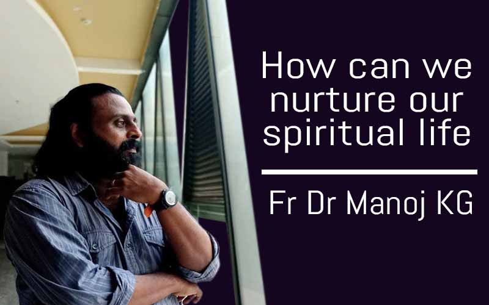

How can we nurture our spiritual life?
How do I attain life in the spirit? What must be done to attain life in the spirit? Who imparts this spiritual life? What is the benefit of attaining life in the spirit? For a plant's seed to germinate, it needs a favorable environment and water. If an egg is to hatch, it needs a favorable environment and warmth. Every seed placed inside a fruit in a plant is produced with the intention of sprouting, growing, and bearing fruit. But very few seeds germinate, very few grow, and very few bear fruit.A plant needs water to sprout, an egg needs warmth to grow, and a teacher with God's life to set the growth in the human spirit.Even if there is no Guru, there may be life in certain circumstances... But even if it sprouts like a seed on a rock, like a seed by the roadside, like a seed among thorns, it will not bear fruit and grow stunted.
A plant's seed must germinate in fertile soil if it is to grow effectively. In other conditions, the seed will germinate but will not be fruitful. For an egg to hatch and produce a healthy baby, the egg must stay under the wings of a mother bird for as long as it needs to sit. In the same way, in order to have a fruitful soul birth, it is necessary to be merged with the giver, the spirit of God. A plant needs water to sprout, an egg needs warmth to grow, a teacher with God's life to set the growth in the human spirit. Even if there is no Guru, there may be life in certain circumstances... But even if it sprouts like a seed on a rock, like a seed by the roadside, like a seed among thorns, it will not bear fruit and grow stunted.
If a child is to be born and continue to live, it can only be done by someone who nurtures the baby during childhood. Jesus and Krishna needed a human father and mother to complete their childhood on earth.
Go through the below video content to know the subject in depth. These videos are in malayalam language and we may come up with other languages very soon...
If you understand all of the above, if you are a person who has a desire to live a truly non-religious spiritual life in your heart, then it is no coincidence that you have seen this video.
We will be with you to guide you to the spiritual life and take you by the hand. Let's start that journey together...
Register your name through the link provided below. Thank You!
Click on this link to send an email to register your name
Contact Me